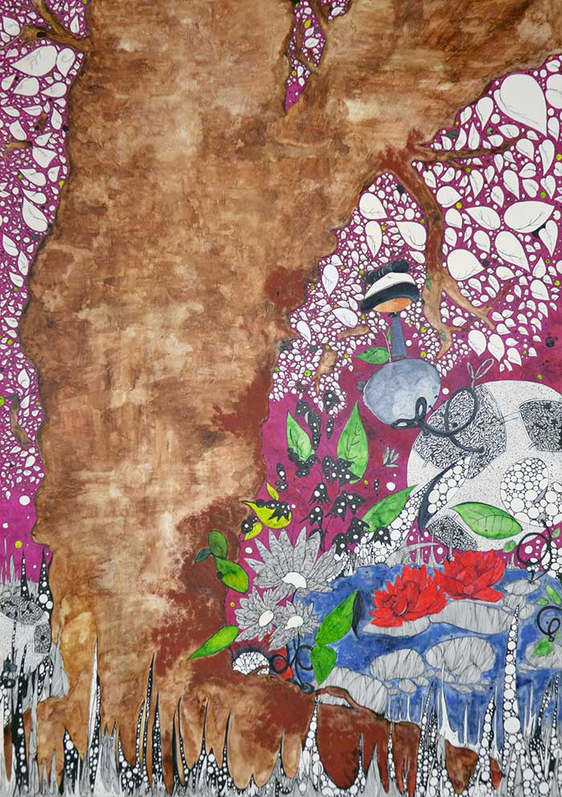

Single Projects
Contact Martina to discuss the creation of a truly unique and personalised design. Available in black and white and colour. Designs can be inspired by a landscape photo, a description and three elements. Prices will change according to the color, the design of the drawing and the time spent on its creation. .
